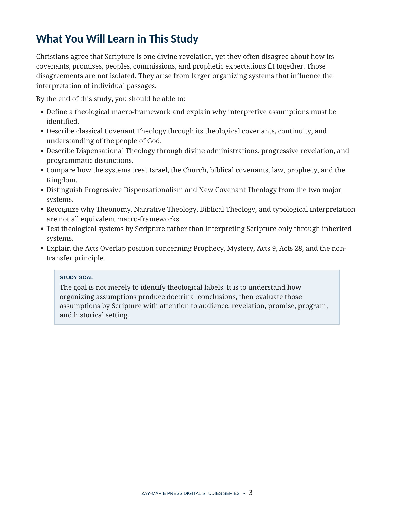
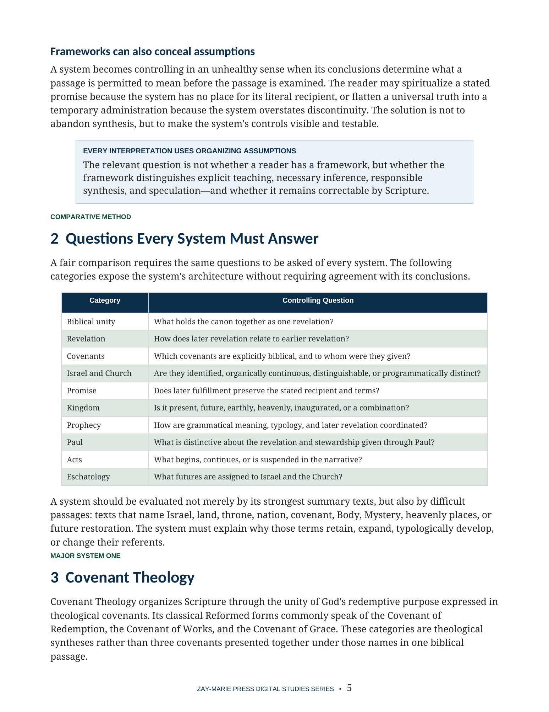
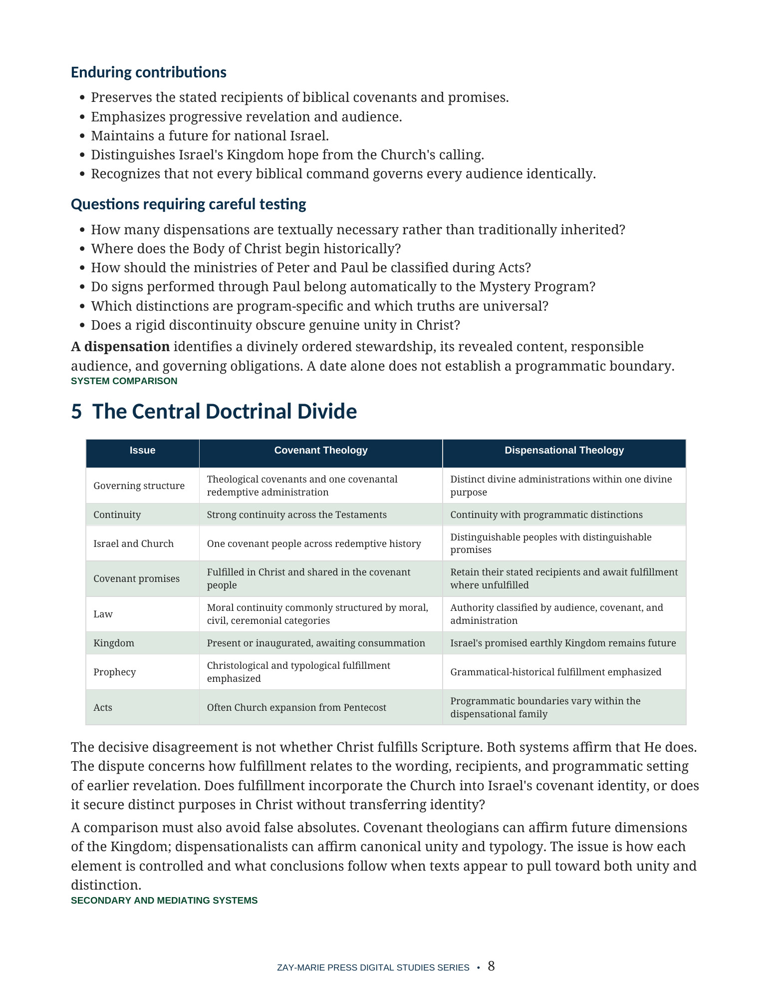
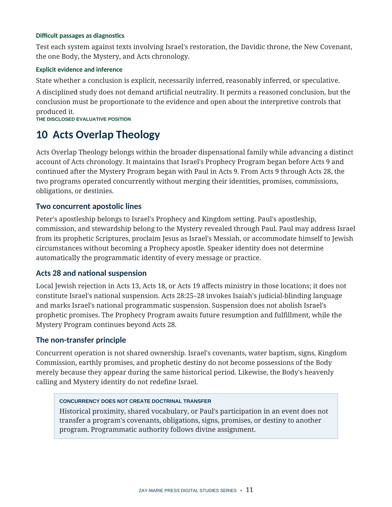

Covenant Theology and Dispensational Theology
Comparing the Major Systems That Organize Biblical Revelation
A disciplined comparison of the systems that shape how readers understand the Bible
Covenant Theology and Dispensational Theology are the two dominant macro-frameworks in Protestant interpretation. Each offers an integrated account of biblical unity, revelation, covenants, Israel and the Church, prophecy, the Kingdom, and the relationship between the Testaments.
This study describes both systems on their own terms, locates major secondary approaches, tests every framework through consistent biblical controls, and explains the distinct Acts Overlap position without turning the study into a product showcase.
Every Reader Uses an Organizing Framework
A framework determines how readers connect earlier promises with later revelation, classify continuity and distinction, identify the recipients of covenants, and understand Israel, the Church, prophecy, and the Kingdom. Those assumptions shape conclusions even when the reader does not use a formal theological label.
This study makes those assumptions visible and testable. It compares the systems through the same doctrinal questions so their genuine strengths, differences, and unresolved tensions can be evaluated from Scripture.
How These Studies Relate
Study 32 compares how covenant theology and dispensational theology organize biblical promises, continuity, and distinctions.
Study 4 — Israel and the Body of Christ Test each system’s treatment of Israel and the Body against a focused study of their corporate identities, callings, and promises; the comparison moves from labels to specific scriptural claims.
Study 39 — The Church’s Relationship to Israel’s Scriptures Apply an audience-sensitive reading method to Israel’s earlier Scriptures; it provides a concrete test of how any larger theological system handles original recipients and present application.
Compare the Systems Through Consistent Questions
Biblical Unity
Identify what each framework believes holds the canon together as one revelation.
Covenants
Compare theological covenant structures with the biblical covenants and their stated recipients.
Israel and the Church
Examine whether the two are identified, organically continuous, distinguishable, or programmatically distinct.
Promise and Fulfillment
Ask whether later fulfillment preserves the wording, recipient, and terms of earlier promises.
Kingdom and Prophecy
Compare present, future, earthly, heavenly, christological, and typological claims.
Paul and Acts
Evaluate progressive revelation, Paul’s stewardship, Acts chronology, and the Acts 9–28 overlap.
Test the Frameworks Against the Text
Genesis 12:1–3
The recipients and terms of the Abrahamic promises.
2 Samuel 7:8–17
The Davidic throne, dynasty, nation, and Kingdom expectation.
Jeremiah 31:31–37
The named parties and stated promises of the New Covenant.
Romans 9–11
Israel’s identity, present condition, remnant, and future salvation.
Ephesians 2–3
The one Body, heavenly position, and Mystery revealed through Paul.
Hebrews 8:6–13
Later use of Jeremiah’s New Covenant prophecy.
Acts 9 and 28
Paul’s calling, concurrent operation, and Israel’s national suspension.
Revelation 20–22
Kingdom fulfillment, final judgment, and the new creation.
Scripture Must Test Every System
“A system is useful only to the extent that it accounts for the text.”
No theological framework should be protected from passages that place its assumptions under pressure. Meaning, audience, assignment, promise, revelatory setting, and difficult texts must control the conclusion.
Preview the Study Before You Purchase
Click any page to enlarge it for reading.
{kind=link}

Learning Outcomes and Study Goal
Begin with measurable objectives for describing, comparing, and testing the major systems.
{kind=link}

Questions Every System Must Answer
Compare the frameworks through consistent questions before examining their conclusions.
{kind=link}

The Central Doctrinal Divide
See the major differences in governing structure, continuity, promises, law, Kingdom, prophecy, and Acts.
{kind=link}

Acts Overlap Theology
Examine the distinct evaluative position concerning Prophecy, Mystery, Acts chronology, and non-transfer.
A Focused Study Built for
Comparison and Evaluation
14-Page Biblical Study
A detailed comparative treatment of the major systems and related approaches.
Ten Teaching Sections
Move from framework fundamentals through the Acts Overlap evaluative position.
Consistent Comparison Method
Ask the same controlling questions of every system before reaching conclusions.
Comparative Tables
Review the major distinctions through clear, high-contrast reference charts.
Scripture-Tracing Exercise
Test covenant, Kingdom, Israel, Church, Pauline, and Acts passages in context.
Review Questions
Test both theological understanding and the ability to evaluate frameworks fairly.
Teaching Outline
A ready framework for presenting the systems and their differences responsibly.
Guided Further Study
Grouped passages and evidence controls help readers continue the investigation independently.
Covenant Theology and Dispensational Theology
Digital PDF · 14 Pages · For personal use
Want More Than a Focused Study?
Digital Studies examine particular biblical subjects and difficult passages. The 40-lesson Biblical Hermeneutics course teaches a complete, repeatable method for establishing meaning in context, determining proper assignment, and making responsible application.